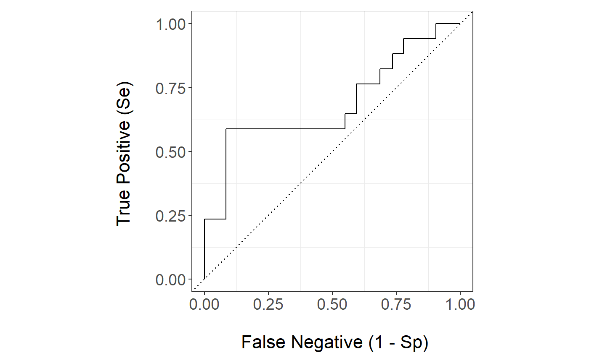
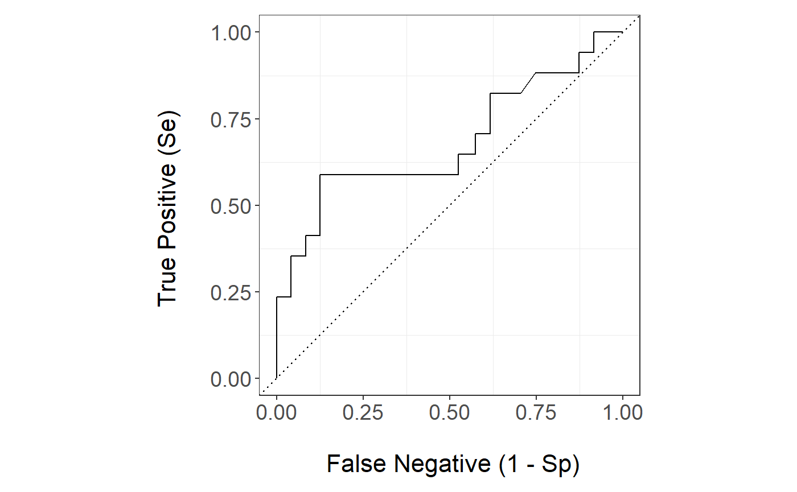
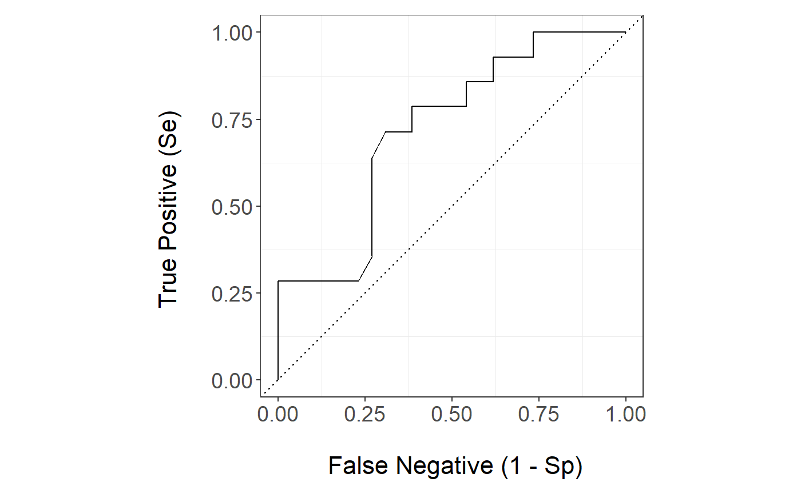
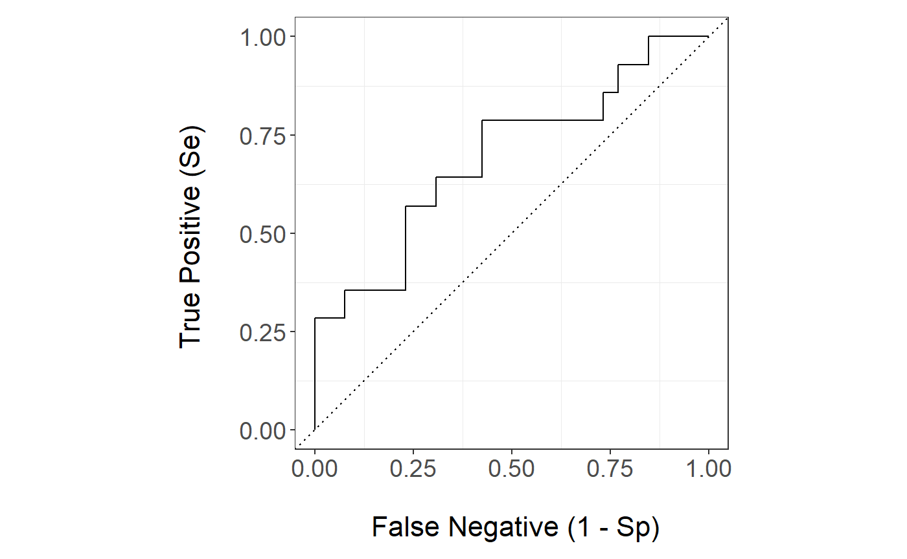
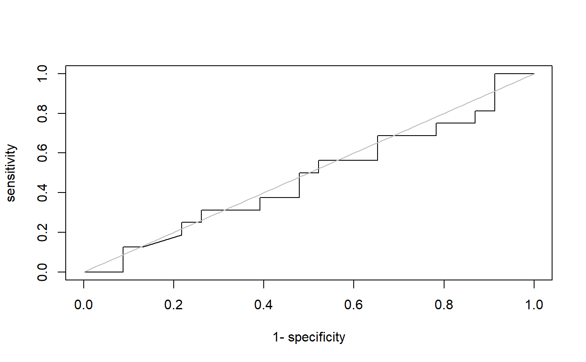

Bone_Marrow_Transplant_Data.RmdWe apply the package stackBagg to a data set The Bone Marrow Transplant Data (bmt) which is in the package timereg . Bone marrow transplants are a standard treatment for acute leukemia. In the recovery process patients can suffer from Infections, toxicity, and (after allogeneic HSCT only), graft-vs.-host disease (GVHD) being the main causes of death. We are interested in predicting the time to death related to treatment where the risk of relapse is a competing risk.
We load the package stackBagg and timereg and we load the data set bmt
library(stackBagg)
#> Loading required package: Matrix
#> Loading required package: gam
#> Loading required package: splines
#> Loading required package: foreach
#> Loaded gam 1.16.1
library(timereg)
#> Loading required package: survival
bmt.data <- data(bmt)summary(bmt)
#> time cause platelet age
#> Min. : 0.030 Min. :0.0000 Min. :0.0000 Min. :-2.3493
#> 1st Qu.: 2.426 1st Qu.:0.0000 1st Qu.:0.0000 1st Qu.:-0.6336
#> Median : 7.862 Median :1.0000 Median :0.0000 Median : 0.2026
#> Mean : 22.237 Mean :0.8211 Mean :0.3137 Mean : 0.0000
#> 3rd Qu.: 35.806 3rd Qu.:1.0000 3rd Qu.:1.0000 3rd Qu.: 0.7875
#> Max. :110.625 Max. :2.0000 Max. :1.0000 Max. : 1.9396
#> tcell
#> Min. :0.0000
#> 1st Qu.:0.0000
#> Median :0.0000
#> Mean :0.1324
#> 3rd Qu.:0.0000
#> Max. :1.0000
dim(bmt)
#> [1] 408 5
train.set <- sample(1:nrow(bmt), floor(.9*nrow(bmt)), replace=FALSE)
test.set <- setdiff(1:nrow(bmt), train.set)
bmt.train <- data.frame(bmt[train.set,])
bmt.test <- data.frame(bmt[test.set,])
tao=7Let’s define the library of algorithms:
We set the covariates that we include in the models:
Now, we are ready to predict the outcome of interest using all the algorithms:
pred.bmt=stackBagg::stackBagg(train.data = bmt.train,test.data = bmt.test,xnam=xnam,tao=7,weighting ="CoxPH" ,folds =5,ens.library = ens.library )
#>
|
| | 0%
|
|:):):):):):) | 20%
|
|:):):):):):):):):):):):):) | 40%
|
|:):):):):):):):):):):):):):):):):):):) | 60%
|
|:):):):):):):):):):):):):):):):):):):):):):):):):):) | 80%
|
|:):):):):):):):):):):):):):):):):):):):):):):):):):):):):):):):)| 100%The assessment of predictive performance using the IPCW AUC is:
pred.bmt$auc_ipcwBagg
#> ens.glm ens.gam.3 ens.gam.4 ens.lasso ens.randomForest ens.svm
#> [1,] 0.691426 0.7156648 0.7482618 0.6979369 0.7741991 0.7045792
#> ens.bartMachine ens.knn ens.nn Stack
#> [1,] 0.7402225 0.7348462 0.7045792 0.6579075Now let s take a look at prediction of the algorithms that allows for weights natively:
head(pred.bmt$prediction_native_weights,5)
#> ens.glm ens.gam.3 ens.gam.4 ens.lasso ens.randomForest
#> 1 0.3140537 0.2244843 0.2242764 0.2242764 0.2242764
#> 2 0.5370589 0.5816092 0.5822392 0.5822392 0.5822393
#> 3 0.5001237 0.4151307 0.4153660 0.4153660 0.4153660
#> 4 0.3483776 0.1743953 0.1740919 0.1740919 0.1740919
#> 5 0.4864675 0.4134749 0.4137059 0.4137059 0.4137059and their performance is:
pred.bmt$auc_native_weights
#> ens.glm ens.gam.3 ens.gam.4 ens.lasso ens.randomForest
#> [1,] 0.7443376 0.6941853 0.6941853 0.6941853 0.6941853The prediction of the survival based methods
head(pred.bmt$prediction_survival,5)
#> CoxPH CoxBoost Random Forest
#> [1,] 0.2374547 0.2479576 0.2748785
#> [2,] 0.5763647 0.5246010 0.4656810
#> [3,] 0.4082210 0.3892429 0.5280400
#> [4,] 0.2129448 0.2287138 0.2720447
#> [5,] 0.4066683 0.3879882 0.5261061Lastly, we could see the performance of the algorithms if we were to discard the censored observations
pred.discard <- stackBagg::prediction_discard(train.data = bmt.train,test.data = bmt.test,xnam=names(bmt)[-(1:2)],tao=7,ens.library=ens.library)
head(pred.discard$prediction_discard)
#> ens.glm ens.gam.3 ens.gam.4 ens.lasso ens.randomForest ens.svm
#> 1 0.2258925 0.28 0.2333652 0.3332544 0.3331018 0.2306427
#> 2 0.5294348 0.48 0.5341014 0.3334391 0.5364273 0.5900897
#> 3 0.4328477 0.52 0.4971897 0.3333600 0.5005083 0.4236504
#> 4 0.1739040 0.24 0.1896916 0.3333063 0.3364470 0.1824228
#> 5 0.4315248 0.52 0.4770707 0.3333592 0.4920329 0.4219852
#> 6 0.2185963 0.24 0.2454924 0.3333321 0.1982644 0.2173432
#> ens.bartMachine ens.knn ens.nn
#> 1 0.2124283 0.2211538 0.2305009
#> 2 0.5370020 0.5397519 0.5905118
#> 3 0.4485997 0.4531181 0.4238104
#> 4 0.2050657 0.2049322 0.1822121
#> 5 0.4474586 0.4519275 0.4221424
#> 6 0.2449240 0.2435657 0.2171632
pred.discard$auc_discard
#> ens.glm ens.gam.3 ens.gam.4 ens.lasso
#> 0.6978022 0.7321429 0.7335165 0.6538462
#> ens.randomForest ens.svm ens.bartMachine ens.knn
#> 0.7403846 0.6923077 0.7417582 0.7335165
#> ens.nn
#> 0.6923077The ROC curve of the stack is
stackBagg::plot_roc(time=bmt.test$time,delta = bmt.test$cause,marker =pred.bmt$prediction_ensBagg[,"Stack"],wts=pred.bmt$wts_test,tao=7,method = "ipcw")
The Random Forest ROC curve is
stackBagg::plot_roc(time=bmt.test$time,delta = bmt.test$cause,marker =pred.bmt$prediction_ensBagg[,"ens.randomForest"],wts=pred.bmt$wts_test,tao=7,method = "ipcw")
The Random Forest survival ROC curve is
stackBagg::plot_roc(time=bmt.test$time,delta = bmt.test$cause,marker =pred.bmt$prediction_survival[,"Random Forest"],wts=pred.bmt$wts_test,tao=7,method = "ipcw")
The Random Forest natively weighted ROC curve is
stackBagg::plot_roc(time=bmt.test$time,delta = bmt.test$cause,marker =pred.bmt$prediction_native_weights[,"ens.randomForest"],wts=pred.bmt$wts_test,tao=7,method = "ipcw")
The Random Forest discarding censored observations
stackBagg::plot_roc(time=bmt.test$time,delta = bmt.test$cause,marker =pred.discard$prediction_discard[,"ens.randomForest"],tao=7,method = "discard")
#> NULL